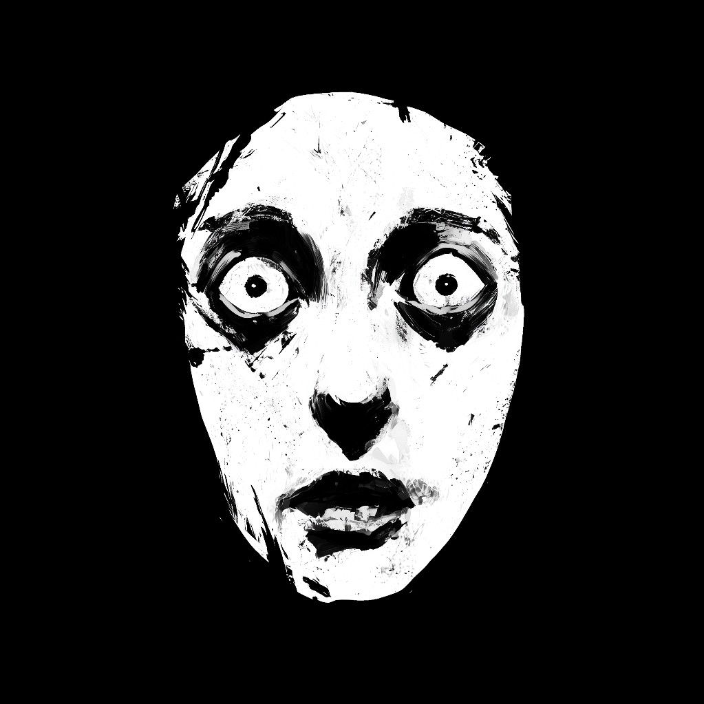

Nuestra historia
Todo empieza con una historia de amor y de amistad un tanto inusual. En el año 1992, las necrófagas Oryniss y Ohirlisa se conocieron en un bar humano enmascaradas como humanas, y poco tiempo después formaron una relación. Tres meses después de conocerse, Ohirlisa sufrió una destransformación accidental por desnutrición, revelando así su identidad; Oryniss también reveló la suya, lo que fortaleció su vínculo hasta ser considerado inquebrantable.
A partir de este evento, la pareja empezó a participar en activismo monstruoso, reuniéndose con grupos clandestinos de criaturas marginadas y conociendo al fantasma Spiro, quien se volvería su aliado y mejor amigo. En el año 2008, los tres fundaron FreakLove, con la intención de evitar que otras parejas monstruosas pasen por el mismo duelo emocional.

